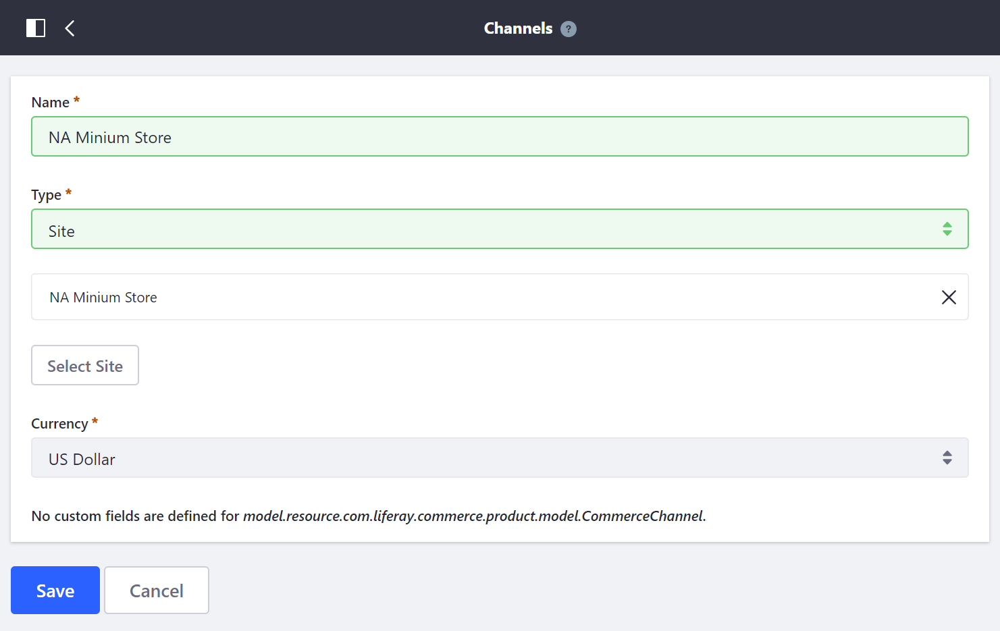

Managing Channels¶
This article describes how to manage Channels in Liferay Commerce. Out-of-the-box, Channels are assigned in a 1:1 relationship with sites. To learn more about the using Channels in Liferay Commerce, see: Introduction to Channels.
Adding a New Channel¶
To add a new Channel, follow these steps:
Navigate to the Control Panel → Commerce → Channels.
Click the (+) button.
Enter a name for the new channel.
In the Type field, select Site.
Select a site to associate with the channel.
Select a currency to associate with the channel.
Click Save.

The channel is created and associated with the selected site. Products may now be configured to be filtered by this new channel. See Configuring Product Visibility by Site Using Channels for more information.